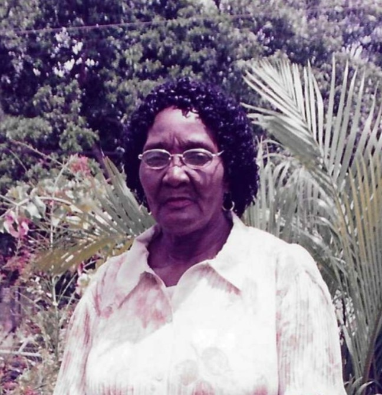
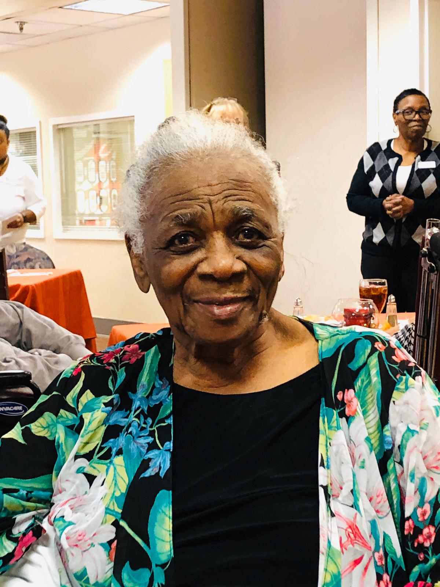
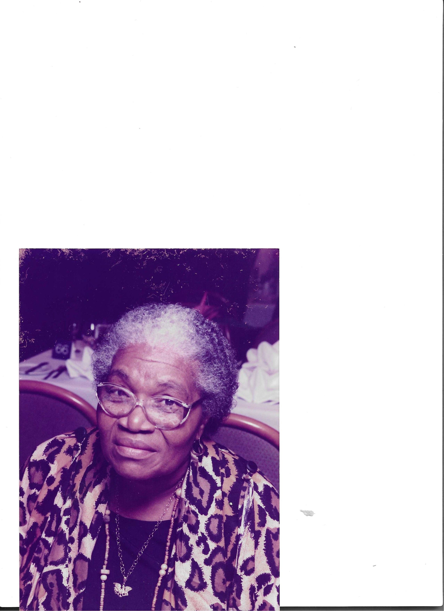
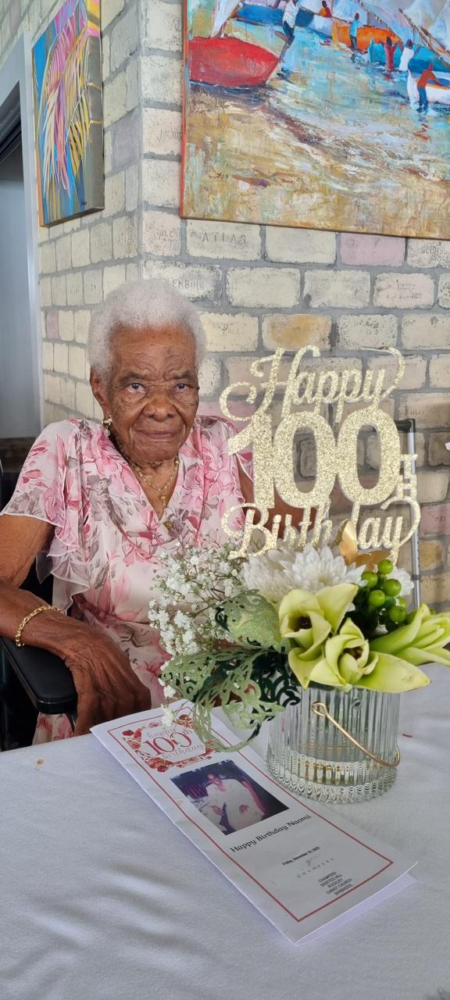

Aged 71 · Entered rest Wednesday, July 29th, 2026
Tyrone Harcourt Conliffe
Of Upper Carters Gap, Enterprise, Christ Church.
View obituary →Obituaries & Memorials
A place for families and friends to find published notices, service information and lasting tributes.
In loving memory
Published obituary notices will appear here. Please contact Sterling if you need assistance with a notice or service information.
Aged 71 · Entered rest Wednesday, July 29th, 2026
Of Upper Carters Gap, Enterprise, Christ Church.
View obituary →Aged 66 · Entered rest Saturday, July 4th, 2026
Of Waverly Cot, St. George.
View obituary →Aged 36 · Entered rest Tuesday, June 23rd, 2026
Affectionately known as “Teisha” of Pool Land, St. John, employee of Cidel Bank and Trust.
View obituary →Aged 53 · Entered rest Tuesday, June 16th, 2026
Affectionately known as “Ranks” of Browne’s Gap, Rockley, Christ Church, Proprietor of Shamica’s Variety.
View obituary →Aged 84 · Entered rest Sunday, June 14th, 2026
Affectionately known as “Verns” of Glen Acres, The Farm, St. George.
View obituary →Aged 78 · Entered rest Saturday, June 13th, 2026
Of 90 Regency Drive, Warrens Park South, St. Michael.
View obituary →Aged 71 · Entered rest Saturday, May 23rd, 2026
Affectionately known as “Colonel or Gaddafi” of Parkinson Field, Pine, St. Michael.
View obituary →Aged 69 · Entered rest Thursday, May 21st, 2026
Of #46 Welches Heights, St. Thomas.
View obituary →Entered rest Tuesday, May 19th, 2026
Of 61 Castle Terrace, St. Philip.
View obituary →Aged 41 · Entered rest Sunday, May 17th, 2026
Of Apartment #3 Palm Dale Drive, Fortesque, St. Philip and formerly of Lot 84, 4th Avenue Kingsland Terrace North, Christ Church.
View obituary →Aged 83 · Entered rest Friday, May 15th, 2026
Affectionately known as “Patsy” of Sharon, St. Thomas Retired General Worker of the Child Care Board.
View obituary →Aged 79 · Entered rest Saturday, May 9th, 2026
Affectionately known as “Bobby” of Danesbury, Black Rock, St. Michael.
View obituary →Aged 72 · Entered rest Friday, May 1st, 2026
Of Clarke’s Gap #2, Derrick’s, St. James.
View obituary →Aged 86 · Entered rest Wednesday, April 29th, 2026
Affectionately known as “Boy Blue or Bluz” of 99L Parkingson Field, The Pine, St. Michael.
View obituary →Aged 64 · Entered rest Monday, April 27th, 2026
Affectionately known as “Wrecker” of Malvern Plantation St. John.
View obituary →
Aged 83 · Entered rest Friday, April 24th, 2026
Of #14 Garner Drive, Enterprise Gardens, Christ Church and formerly of the United Kingdom.
View obituary →Aged 55 · Entered rest Sunday, April 19th, 2026
Affectionately known as “G” of Philip’s Road, St. Stephen’s Hill, St. Michael and formerly of St. Vincent and the Grenadines, well known painter and mechanic.
View obituary →Aged 77 · Entered rest Wednesday, April 15th, 2026
Affectionately known as “Ma” of Clarke’s Gap, Spooners Hill, St. Michael.
View obituary →Aged 74 · Entered rest April 11th, 2026
Of Block 11G, Farm Road Development, Deacons Road, St. Michael and formerly of 8th Avenue, New Orleans, St. Michael.
View obituary →Aged 75 · Entered rest April 3rd, 2026
Affectionately known as “John or Mubutu” of Arch Hall, St. Thomas.
View obituary →Aged 79 · Entered rest Monday, March 30th, 2026
Affectionately known as “Jimmy” of Edgecliff, St. John.
View obituary →Aged 80 · Entered rest Friday, March 20th, 2026
Of East Terrace, Wildey, St Michael.
View obituary →Aged 72 · Entered rest Wednesday, March 18th, 2026
Of Edghill, St. Thomas.
View obituary →Aged 51 · Entered rest March 17th, 2026
Affectionately known as “Kim” of 3rd Avenue, Alleyne Land, Bush Hall, St. Michael.
View obituary →Aged 76 · Entered rest Saturday, March 7th, 2026
Of Road View, St. Peter.
View obituary →Aged 38 · Entered rest Thursday, March 5th, 2026
Of Greenwich Village, St. James.
View obituary →Aged 19 · Entered rest Saturday, February 14th, 2026
Of #2 Sterling, Black Rock, St. Michael.
View obituary →Aged 51 · Entered rest Friday, February 13th, 2026
Affectionately known as “Champ” of St. Stephen’s Hill, Black Rock, St. Michael.
View obituary →Aged 79 · Entered rest Sunday, February 1st, 2026
Affectionately known as “Hendy or Mash Up” of Lears Plantation.
View obituary →Aged 84 · Entered rest Wednesday, January 28th, 2026
Of #2 Durant Village, Holder Hill, St James, formerly of the UK.
View obituary →Aged 75 · Entered rest Monday, January 12th, 2026
Affectionately known as “Euline” of #344 Emerald Park West, St. Philip and formerly of #2 Glebe Land, St. George.
View obituary →Aged 71 · Entered rest Saturday, January 10th, 2026
Of 1st Avenue Deighton Road, St. Michael.
View obituary →Aged 72 · Entered rest January 7th, 2026
Affectionately known as “Tony” of Dear's Land, Black Rock, St. Michael and formerly of Marine Road, Bush Hall, St. Michael.
View obituary →Aged 84 · Entered rest Monday, December 22nd, 2025
Of 1st Avenue Accommodation Road, Spooners Hill, St. Michael.
View obituary →Aged 33 · Entered rest Wednesday, December 17th, 2025
Of 3D Ocean Road, Deacons Farm, St. Michael.
View obituary →Aged 65 · Entered rest Saturday, December 13th, 2025
Affectionately known as “Bassette or Smitty” of Brathwaite’s Gap, Dayrells Road, St. Michael.
View obituary →Aged 59 · Entered rest Monday, December 1st, 2025
Affectionately known as “Gwendolyn Bynoe” of Kings Village, Dayrells Road, St. Michael.
View obituary →Aged 78 · Entered rest Monday, December 1st, 2025
Affectionately known as “Sammy or Poona Poona” of Berbice Road #1, Fitts Village, St. James, and formerly of Orange Hill, St. James.
View obituary →Aged 16 · Entered rest Friday, November 21st, 2025
Of Clevedale Road, Black Rock, St. Michael.
View obituary →Aged 92 · Entered rest Friday, November 21st, 2025
Affectionately known as “Colin or Jack Hobbs” of Spa Hill, St. Joseph, retired supervisor of DaCosta Mannings- Lumber.
View obituary →Aged 70 · Entered rest Monday, November 10th, 2025
Of Farmers, St. Thomas and formerly of #49 St. Annes Road, Pinelands and Brandons, St. Michael.
View obituary →Aged 96 · Entered rest Friday, November 8th, 2025
Of Lot 25 St. Marys Ave, Holders Terrace, St. James, formerly of School Road, Carrington’s Village, St. Michael.
View obituary →Aged 76 · Entered rest Monday, November 3rd, 2025
Of 2A Green Hill Close, Silver Hill, Christ Church.
View obituary →Aged 99 · Entered rest Wednesday, October 22nd, 2025
Of 144 Sea Breeze Ave, Atlantic Shores, Christ Church, formerly of Brittons Hill, St. Michael.
View obituary →Aged 74 · Entered rest Monday, October 13th, 2025
Affectionately known as “Seaman or Boson” of Lot 114 Cutting Road, Haggatt Hall, St. Michael formerly of Pasture Road, Haggatt Hall, St. Michael.
View obituary →
Aged 82 · Entered rest Wednesday, October 8th, 2025
Affectionately known as “Sissy” of Rock Hall, St. Thomas.
View obituary →Aged 76 · Entered rest Tuesday, October 7th, 2025
Affectionately known as “Joy” of Two Mile Hill, St. Michael, and formerly of Foster Hall, St. John and Breedy's Land, Christ Church.
View obituary →
Aged 93 · Entered rest October 6th, 2025, in Norfolk, Virginia
Of formerly of Parkinson Field, Pinelands, St. Michael.
View obituary →
Aged 85 · Entered rest Sunday, September 14th, 2025
Affectionately known as “née Zee” of Clevedale Road.
View obituary →
Aged 89 · Entered rest Friday, September 12th, 2025
Of Grazettes Road, St. Michael.
View obituary →Aged 37 · Entered rest Tuesday, September 9th, 2025
Of Block 1D, Flat Rock, St. George, formerly of Ashbury, St. George.
View obituary →Aged 77 · Entered rest Sunday, August 17th, 2025
Of School Road, Carringtons Village, St. Michael.
View obituary →
Aged 101 · Entered rest Monday, July 28th, 2025
Affectionately known as “Olga Dyall” of Sunny Side Court, Deacons Farm Housing Area, St. Michael.
View obituary →Aged 80 · Entered rest Saturday, July 12th, 2025
Of #324, 11th Avenue, West Terrace Gardens, St. James and formerly of Thickette Land, St. Philip, Retired senior civil servant.
View obituary →Aged 93 · Entered rest Monday, July 7th, 2025
Of Rock Hall, St. Thomas.
View obituary →Aged 66
Affectionately known as “Pop” of #9 Haynes Hill, St. John.
View obituary →Whenever you need us
When you are ready to talk, a caring member of our team is only a call or message away.